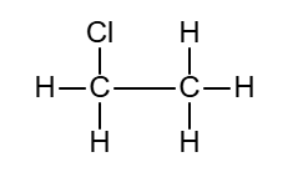
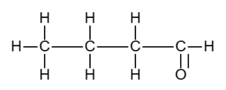
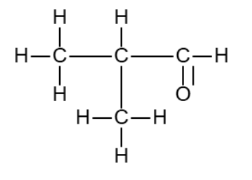
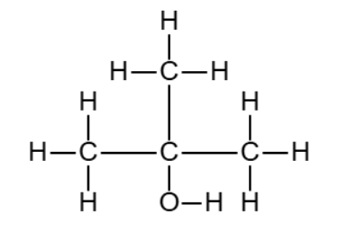
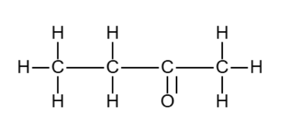

炭素および水素のみからなる有機化合物 $A$ がある. 一定量の $A$ を完全燃焼させたところ, 二酸化炭素が $13.2\ \mathrm{mg}$, 水が $8.1\ \mathrm{mg}$ 生じた.
また, $A$ は気体であり, $10.0\ \mathrm{g}$ の $A$ を $27 \mathrm{C\degree}$ で体積が $8.3\ \mathrm{L}$ の体積が変わらず質量を無視できる容器に入れたところ, その気体は $1.0\times 10^5\ \mathrm{Pa}$ の圧力を示した.
(1) $A$ の組成式および分子式を求めよ.
$A$ に塩素 $\mathrm{Cl_2}$ を加え, 光を短時間照射した. このとき, 反応によって生成する有機化合物を $B$ とする.
(2) $B$ の名称および構造式を示せ.
(3) $B$ が生成する反応において, 生成物のうち $B$ でないものの名称および化学式を示せ.
解答を表示
(1) 元素分析. 二酸化炭素, 水の質量のうち $A$ に含まれていた炭素, 水素の質量はそれぞれ $3.6\ \mathrm{mg}$, $0.9\ \mathrm{mg}$ である.
したがって, 炭素と水素の個数の比は $1:3$ であるため, $A$ の組成式は $\mathrm{CH_3}$.
次に, 分子式を決定する. $A$ の分子量を $M$ とすると, 条件より
$$1.0\times 10^5\times 8.3=\frac{10.0}{M}\times 8.3\times 10^3\times 300$$
$M=30$ が得られる. よって, $A$ の分子式は $\mathrm{C_2H_6}$ である.
(2) 以下の反応が起こる.
$$\mathrm{C_2H_6+Cl_2\rightarrow C_2H_5Cl+HCl}$$
生成物の名称はクロロエタンである. また, 構造式は以下.

(3) 塩化水素 $\mathrm{HCl}$.
炭素, 水素, 酸素からなり, 炭素の数が $4$ 個かつ酸素を $1$ 個だけ含む有機化合物 $A, B, C$ がある.
これらに関して, 次のことがわかっている.
(ア) $A$ を酸化すると別の有機化合物 $D$ が得られ, $D$ はそれ以上酸化されない.
(イ) $B, C$ は酸化されない
(ウ) $D$ に $B$ を加えて加熱したところ, 有機化合物 $E$ および水 $\mathrm{H_2O}$ を生成物とする可逆反応が起こり, 平衡状態に達した.
(エ) $E$ は芳香性を持ち, 水に溶けにくい
(オ) $C$ に水中で水酸化ナトリウムとヨウ素を反応させると黄色沈殿 $F$ が生じた
(カ) $A, B, C$ の炭素間の結合はすべて単結合である
(1) $A$ としてあり得る構造式をすべて示せ.
(2) $B$ としてあり得る構造式をすべて示せ.
(3) (ウ) の反応において, 平衡を移動させ, $E$ の収率を上げるためにはどのようにすればよいか. 簡潔に述べよ.
(4) $C$ の構造式を示せ. また, $F$ の名称と化学式を示せ.
解答を表示
(1) $A$ は $1$ 回のみ酸化されるため, $A, D$ はアルデヒドとカルボン酸または2級アルコールとケトンのどちらかである.
(ウ)は $D$ と $B$ が脱水縮合してエステルが生成する反応であるため, $D$ はカルボン酸であり, $A$ はアルデヒドであることがわかる.
よって, $A$ としてあり得る構造式は以下の $2$ 通り.


(2) $B$ はアルコールである. $B$ は酸化されないことから, 3級アルコール.
よって, $B$ としてあり得る構造式は以下.

(3) 生成物である水 $\mathrm{H_2O}$ を取り除けばよい.
(4) $C$ は酸化されず, (オ)からアセチル基を持つケトンであることがわかる.
よって, $C$ の構造式は以下.

また, $F$ の名称はヨードホルムであり, 化学式は $\mathrm{CHI_3}$ である.